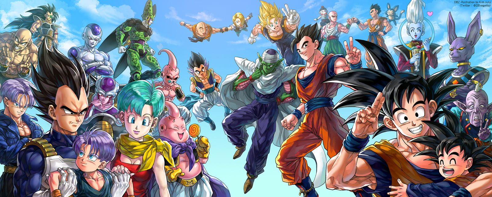
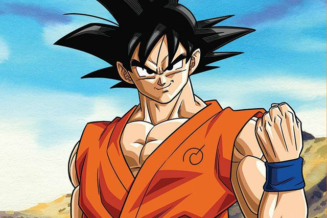
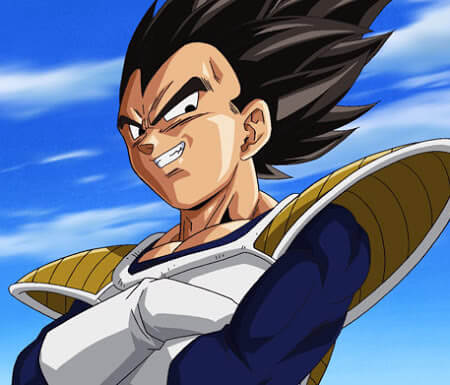

Dragon Ball Z is a Japanese anime television series produced by Toei Animation.Dragon ball Z it is the sequel to the 1986 Dragon Ball anime series and anime series and adapts the latter 325 chapters of the original Dragon Ball manga series created by Akira Toriyama. Dragon Ball Z continues the adventures of Son Goku in his adult life as he and his companions defend the Earth against villains including aliens (Vegeta, Frieza), androids, and magical creatures. At the same time, the story parallels the life of his son, Gohan, as well as the development of his rivals, Piccolo and Vegeta. Dragon Ball Z has since been followed by two sequel series: Dragon Ball GT (1996–1997) and Dragon Ball Super (2015–2018).
Dragon Ball Z Crew
The most hard working saiyan
Son Goku is the main protagonist of the Dragon Ball series. Goku is a Saiyan male originally sent to destroy Earth as an infant. A head injury at an early age alters his memory, ridding him of his initial destructive nature and allowing him to grow up to become one of Earth's greatest defenders. He constantly strives and trains to be the greatest warrior possible, which has kept the Earth and the universe safe from destruction many times.
Goku is introduced as an eccentric, monkey-tailed boy who practices martial arts and possesses superhuman strength. He meets Bulma and joins her on a journey to find the magical seven Dragon Balls that can grant the user one wish. Along the way, he finds new friends who follow him on his journey to become a stronger fighter. As Goku grows up, he becomes the Earth's mightiest warrior and battles a wide variety of villains with the help of his friends and family, while also gaining new allies in the process As the protagonist of Dragon Ball, Goku appears in most of the episodes, films, television specials and OVAs of the manga's anime adaptations (Dragon Ball, Dragon Ball Z) and sequels (Dragon Ball GT, Dragon Ball Super), as well as many of the franchise's video games. Due to the series' international popularity, Goku has become one of the most recognizable and iconic characters in the world. Outside the Dragon Ball franchise, Goku has made cameo appearances in Toriyama's self-parody series Neko Majin Z, has been the subject of other parodies, and has appeared in special events. Most Western audiences were introduced to the adult version of Goku appearing in the Dragon Ball Z anime, itself an adaptation of Dragon Ball manga volumes 17–42, as opposed to his initial child form, due to the limited success of the first series overseas. Goku's critical reception has been largely positive and he is often considered to be one of the greatest manga and anime characters of all time.
The prince of the fallen Saiyans
Vegeta is the prince of the fallen Saiyan race. He is the eldest son of King Vegeta, the older brother of Tarble, the husband of Bulma, the father of Trunks and Bulla, and the ancestor of Vegeta Jr.
Regal, egotistical, and full of pride, Vegeta was once a ruthless, cold-blooded warrior and outright killer, but later abandons his role in the Frieza Force, instead opting to remain and live on Earth. His character evolves from villain, to anti-hero, then to hero through the course of the series, repeatedly fighting alongside the universe's most powerful warriors in order to protect his new home and surpass Goku in power. He is extremely arrogant, proud and hardworking; constantly referring to his heritage and royal status throughout the series. He believed that he should be regarded as the strongest fighter in the Universe and becomes obsessed with surpassing Goku after losing his first battle with him. After Frieza's death, Vegeta later unites with the heroes to thwart greater threats to the universe, most notably Cell, Majin Buu, Beerus, Zamasu and Broly. Throughout the series, Vegeta's role changes from villain to antihero and later as one of the heroes, while remaining a rival to Goku. Vegeta has been hailed as one of the most iconic characters not only in the Dragon Ball franchise, but also in manga and anime history as a whole. He is often cited as one of the most popular examples of rival characters in the industry, due to his character arc and narrative throughout Dragon Ball Z.
The prince of the fallen Saiyans